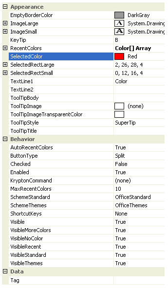

Ribbon Group Item ColorButton
Group Item Color Button
You can add a group color button to either the group triple or the group lines container. Use the ButtonType property to define the type of button operation you require. Figure 1 shows the list of all properties exposed by the group color button item.

Figure 1 - Group Item Color Button Properties
EmptyBorderColor
Color to draw the border of the selected rect when the selected color is Color.Empty.
ImageLarge
ImageSmall
If you need an image shown when the label is the full height of the group content area then use the ImageLarge property. All other cases use the ImageSmall if it has been specified.
KeyTip
When KeyTips are displayed this property defines the KeyTip for the button instance. You should ensure that all items inside a tab have unique KeyTip values so that the user can always select items using keyboard access.
RecentColors
Array of colors to show in the recent colors section of the context menu.
SelectedColor
The currently selected color which can be the Color.Empty value.
SelectedRect
The rectangle of the displayed image that should be drawn in the selected color. If the selected color is Color.Empty then the border of this rectangle is drawn in the EmptyBorderColor instead.
TextLine1
TextLine2
When the color button is inside a container that displays it the full height of the group content area the TextLine1 and TextLine2 strings are shown on two separate lines underneath the color button image. In all other cases the TextLine1 and TextLine2 are concatenated together with a space between them for showing horizontally after the color button image.
ToolTipBody
ToolTipImage
ToolTipImageTransparentColor
ToolTipStyle
ToolTipTitle
When the user hovers the mouse over the button instance you can use these properties to define the tool tip that will be displayed. Use ToolTipTitle and ToolTipBody to define the two text strings for display and ToolTipImage for the associated image. If you image contains a color that you would like to be treated as transparent then set the ToolTipImageTransparentColor. For example, many bitmaps use magenta as the color to become transparent. To control how the text and image are displayed in the tool tip you can use the ToolTipStyle property.
AutoRecentColors
Should the RecentColors array be automatically updated to include newly selected colors that are not contained in either the standard or theme sections.
ButtonType
Determines the appearance and operation of the button. Possible values include:-
- Push - A traditional push button
- Check - Toggles between checked and unchecked
- DropDown - Displays a context menu strip when pressed
- Split - Split between a traditional push button and a drop down area
Checked
This property is only used when the ButtonType is defined as Checked. It determines if the button should be drawn with the checked appearance. The value will automatically be toggled between True and False when the user clicks the button and ButtonType is Checked.
Enabled
Used to define if the button is enabled or disabled at runtime.
KryptonCommand
Attached command that is used as a source of state.
MaxRecentColors
Limit placed on the size of the RecentColors array.
SchemeStandard
SchemeThemes
Enumeration values indicating the predefined sets of colors to show in the standard and themed sections of the context menu.
ShortcutKeys
Define this property if you would like your application to have a shortcut key combination that invokes the button. For example, buttons used for cut/copy/paste would be defined with shortcut keys so the user can invoke those actions without moving focus away from the current control.
Visible
Use this property to specify if the button should be visible at runtime.
VisibleMoreColors
VisibleNoColor
VisibleRecent
VisibleStandard
VisibleThemes
Should the relevant section of the context menu be displayed.
Tag
Associate application specific information with the object instance by using this property.
Events
DropDown
A cancelable event than allows you to customize the drop down context menu before it is displayed.
Click
Occurs when the button has been pressed.
MoreColors
Occurs when the user selects the MoreColors menu option.
SelectedColorChanged
Occurs when the value of the SelectedColor property changes.
TrackColor
As the user tracks over different colors this event fires so you can provide instance feedback on the effect this would have if selected.